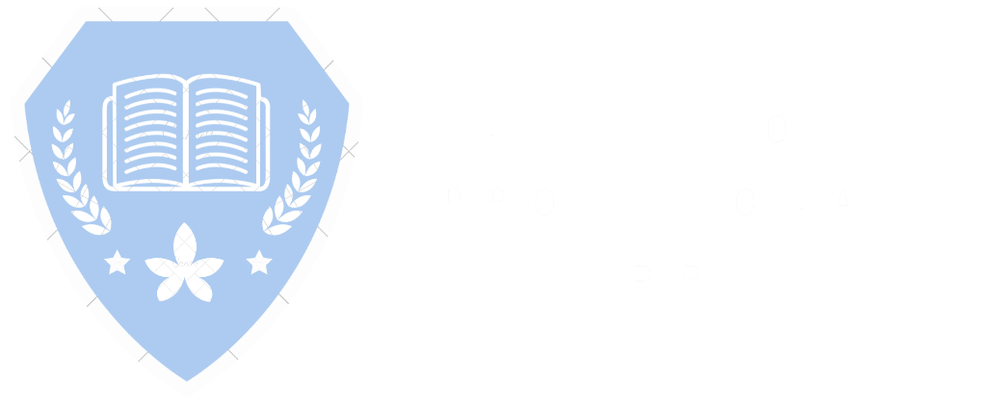

Inicio
Quienes somos
Nuestras Carreras
Conócenos
Preguntas Frecuentes
Dudas
Postula
Acceso a Intranet
Preguntas Frecentes
1-¿Cuál es la modalidad de las clases?
Habra una modalidad de clases; clases asincrónicas, donde
los estudiantes podrán ingresar a las clases en el horario
que más le convenga.
2-¿Qué documentos debo presentar para matricularme?
Una Fotocopia de la Cédula de Identidad, ambos lados.
Licencia de Enseñanza Media Chilena, original o copia
legalizada ante Notario Público
3-¿En qué consiste la gratuidad?
En que las/os estudiantes que reúnen los requisitos
y se matriculen en las universidades adscritas a la gratuidad
podrán acceder a un beneficio que le permitirá no tener
que pagar ni la matricula ni el arancel por la educación
formal de sus carreras.
4-¿Me puedo cambiar de carrera una vez matriculado?
Puedes realizar el cambio de carrera, siempre y cuando
cumplas con los requisitos y queden vacantes disponibles.
5-¿Existen carreras precensiales en Telepresente?
No, nuestra modalidad es 100% online
6-¿Quién puede ser mi sostenedor?
El sostenedor es la persona responsable financieramente
de tus estudios. Los requisitos para sostenedores son ser
mayor de 18 años, acreditar domicilio en Chile y no tener
deudas con IP Telepresente al momento de la matrícula.